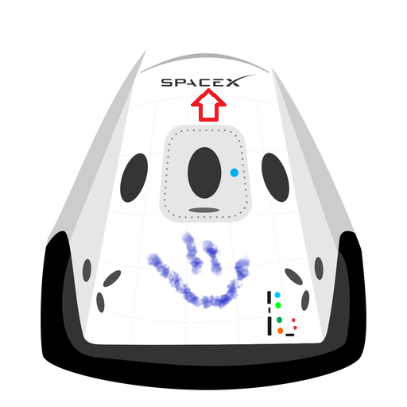

Hyperblog
Tu blog de confianza
Este es el título del post
Y este es el párrafo de inicio donde vamos a explicar las cosas increíbles que se pueden hacer con ramas.

Aprovecho esta oportunidad para intentar escribir sin teclado, se que debería practicarlo mas seguido, la memoria muscular es increíble. Incluso me sale mejor teniendo la mano izquierda levantada y aun asi no pierdo tanta referencia del teclado. Bueno... sigo con el curso de git y github de Platzi.
Despues de hacer los cambios para generar conflicto en el merge.